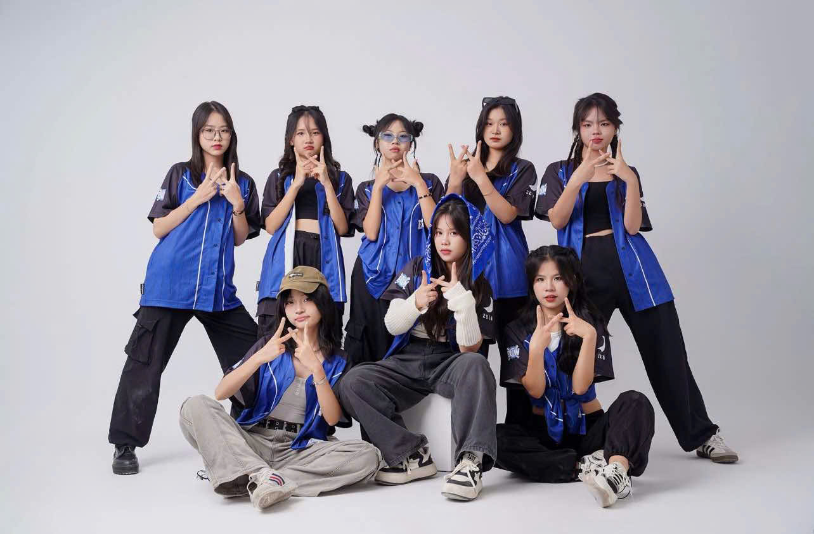
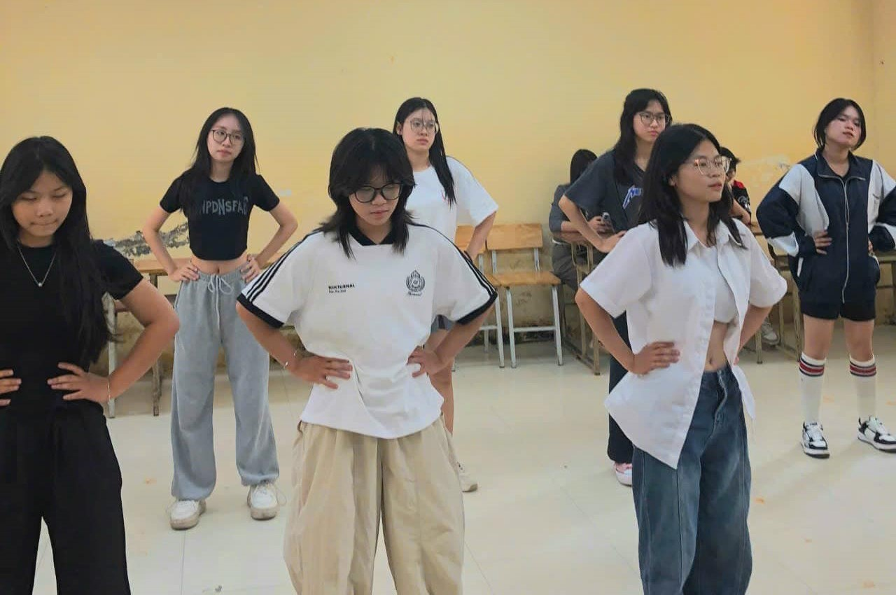
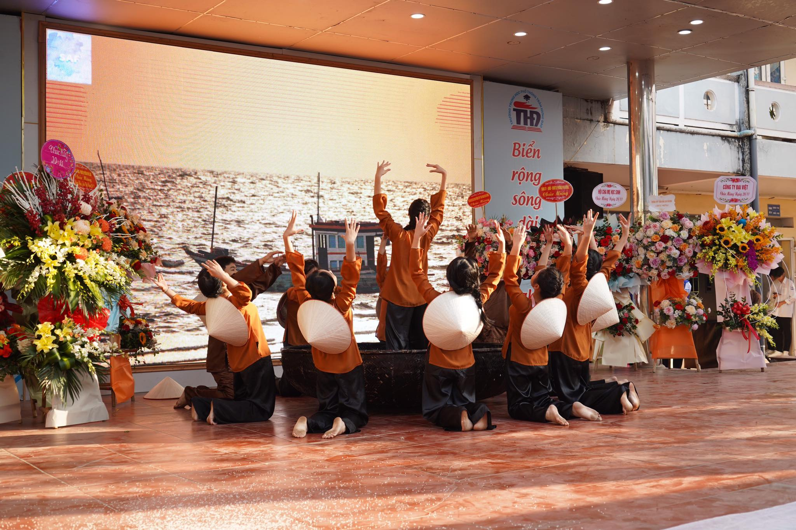
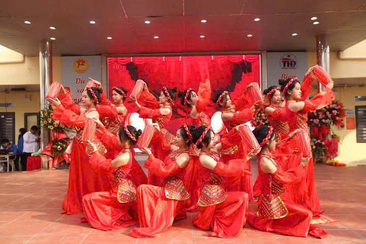
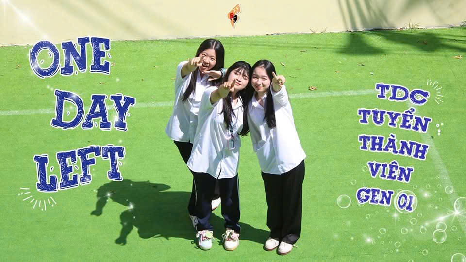
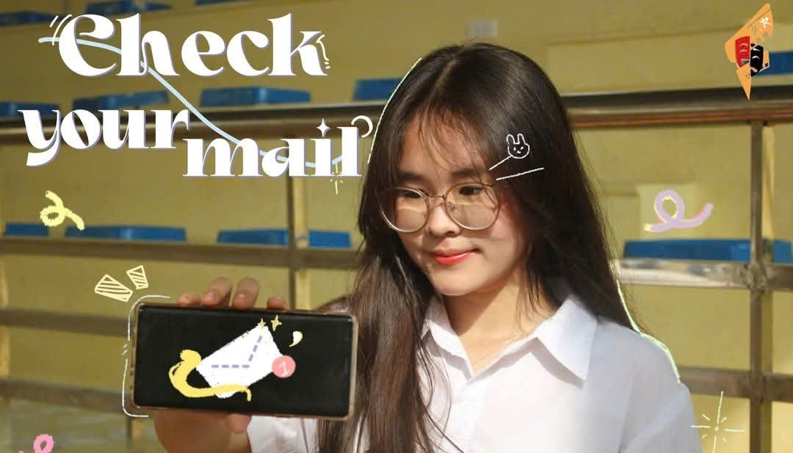
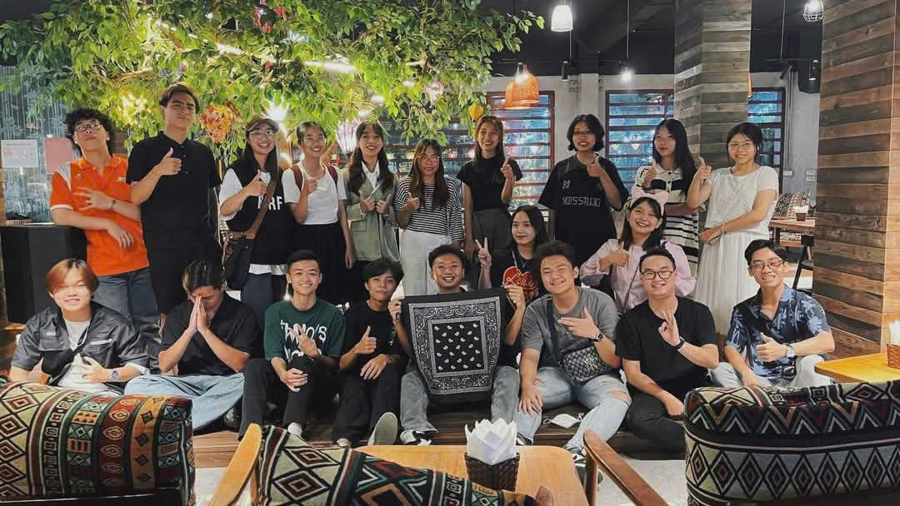
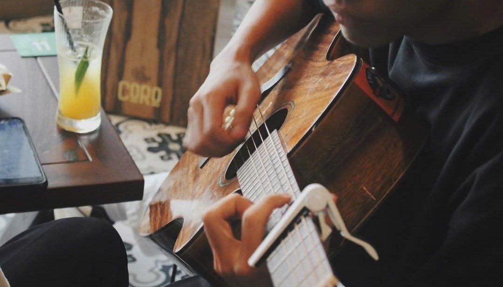
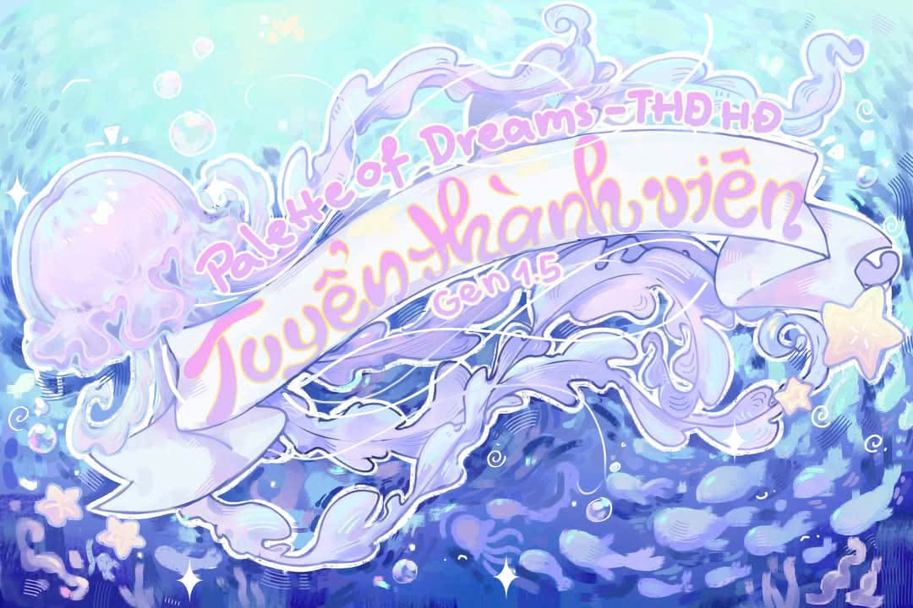
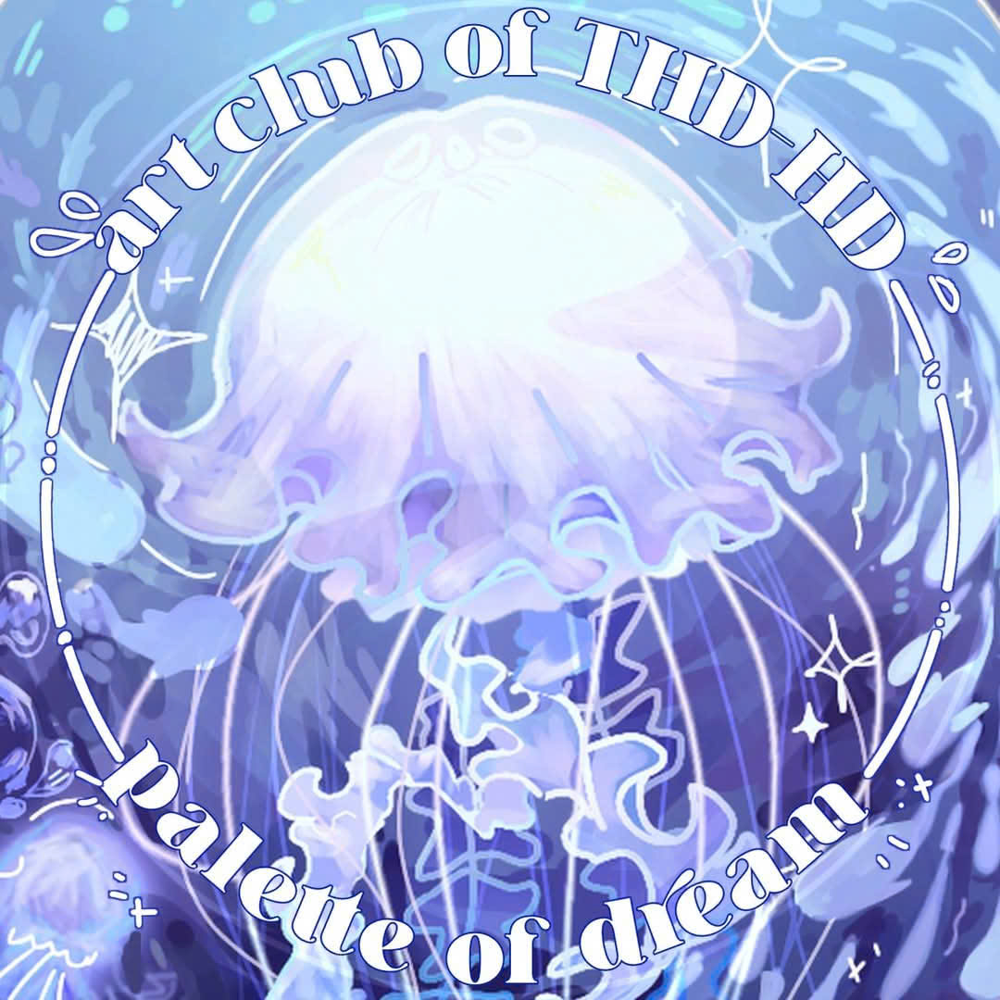

CLB Nhảy (EUW)
I. GIỚI THIỆU VỀ CÂU LẠC BỘ:
- E.U.W Trần Hưng Đạo Hà Đông Dance Club (E.U.W) là câu lạc bộ nhảy chính thức trực thuộc trường THPT Trần Hưng Đạo - Hà Đông, được thành lập từ năm 2023. Qua một mùa hoạt động đáng nhớ, E.U.W quay trở lại với nhiều đổi mới đầy bất ngờ, mang đến sân chơi sáng tạo, năng động và kết nối cho các bạn học sinh yêu thích nhảy.
II. GIẢI MÃ CHỦ ĐỀ:
- Mùa 2 lấy cảm hứng từ hình tượng "Elevate, Unite, Win" - đại diện cho tinh thần không ngừng nâng cao kỹ năng, đoàn kết các thành viên và hướng tới những thành công mới. Tinh thần này không chỉ giúp CLB phát triển về chuyên môn nhày mà còn góp phần xây dựng một cộng đồng đam mê và tràn đầy cống hiến.
III. ĐỐI TƯỢNG HƯỚNG ĐẾN:
- Học sinh THPT trên địa bàn Hà Nội có niềm đam mê với nhảy.
- Các nhóm nhảy, tổ chức và cá nhân quan tâm đến hoạt động nghệ thuật biểu diễn.
IV. Ý NGHĨA & MỤC TIÊU
- Tạo ra một môi trường nhảy chuyên nghiệp, vui vẻ và đoàn kết cho học sinh.
- Phát triển kỹ năng nhảy, tự tin sáng tạo và kỹ năng biểu diễn trước đám đông.
- Kết nối và giao lưu với các CLB nhảy khác trong khu vực.
- Xây dựng văn hóa CLB vững mạnh, lan toả tinh thần đam mê nghệ thuật đến mọi người.
- Với những giá trị đó, E.U.W mùa 2 hứa hẹn sẽ trở thành điểm đến lý tưởng cho các bạn trẻ yêu thích nhảy, không chỉ là nơi rèn luyện kỹ năng mà còn là nơi để cùng nhau chia sẻ đam mê và cùng nhau tỏa sáng.
 
CLB Múa (SAF)
Câu lạc bộ Múa SAF – Nơi Đam Mê Nghệ Thuật Thăng Hoa
Năm học mới – Diện mạo mới, tinh thần mới!
Chào mừng tất cả các bạn đến với SAF – Sun and Flowers (Mặt trời và những đóa hoa), Câu lạc bộ Múa của Trường THPT! Với diện mạo mới, năng lượng mới, chúng mình hy vọng rằng đây sẽ là một năm học đầy nhiệt huyết và bùng nổ cùng đam mê nghệ thuật.
SAF không chỉ là nơi để các bạn học sinh rèn luyện kỹ thuật múa mà còn là không gian để thỏa sức sáng tạo, giao lưu, và thể hiện cá tính riêng trên sân khấu. Với hình ảnh mặt trời và những đóa hoa, chúng mình mong muốn mỗi thành viên đều có thể tỏa sáng rực rỡ, lan tỏa năng lượng tích cực như những bông hoa đón nắng ban mai.
Hoạt động của CLB
✨ Luyện tập và biểu diễn: Thành viên sẽ được rèn luyện các kỹ thuật múa từ cơ bản đến nâng cao, cùng nhau chuẩn bị cho những màn trình diễn ấn tượng trong các sự kiện lớn của trường.
🌼 Sáng tạo và phát triển: Không chỉ dừng lại ở việc tập luyện, SAF còn khuyến khích các bạn tự biên đạo và đóng góp ý tưởng cho các tiết mục, giúp mỗi người đều có cơ hội thể hiện bản thân.
🎭 Tham gia sự kiện nghệ thuật: CLB sẽ đại diện trường tham gia các cuộc thi văn nghệ, giao lưu với các CLB khác, mang đến cơ hội cọ xát và học hỏi.
💃 Gắn kết thành viên: Hơn cả một CLB, SAF là một gia đình, nơi các bạn sẽ tìm thấy những người bạn có chung niềm đam mê, cùng nhau học hỏi và phát triển.
SAF chào đón bạn!
Nếu bạn yêu thích nghệ thuật múa, muốn tỏa sáng trên sân khấu và tìm kiếm một môi trường năng động, đừng ngần ngại tham gia SAF! Hãy cùng nhau tạo nên những kỷ niệm đẹp và lan tỏa đam mê nghệ thuật trong năm học này nhé!
 
CLB Kịch
📜 The dramatic club of Tran Hung Dao - Ha Dong (TDC) là nơi dành cho tất cả các bạn học sinh trường THPT trên địa bàn thành phố Hà Nội có niềm đam mê với nghệ thuật sáng tạo nói chung và kịch sân khấu nói riêng.
📜 TDC hoạt động với mong muốn khơi dậy niềm cảm hứng sáng tạo, kiến tạo ra một sân chơi bổ ích, nơi các bạn học sinh có thể giao lưu, học hỏi và thể hiện bản thân. Cùng với đó là viết lên những vở kịch mang nhiều gam màu khác nhau của cuộc sống, đem đến cho khán giả những trải nghiệm đa dạng về cảm xúc, từ đó truyền tải được những thông điệp có ý nghĩa sâu sắc.
🎭 TDC sẽ luôn là một điểm tựa vững chắc, để nhờ đó các bạn có thể bứt phá, luôn tiến về phía trước một cách đầy mạnh mẽ và dứt khoát. TDC tin rằng thế hệ 01 chính là những nhà thám hiểm tài năng và đầy nhiệt huyết sẽ cùng chúng tôi chinh phục hành trình này một cách ngoạn mục🤩
🎭 Về với TDC, bạn sẽ nhận được:
❤️ Kết nối, sẻ chia với những người đồng đội vô cùng tâm lý, sẵn sàng lắng nghe mọi tâm sự “thầm kín” của bạn.
❤️ Rèn luyện kỹ năng mềm: Kỹ năng giao tiếp, làm việc nhóm, khả năng tư duy, khả năng kết nối, …
❤️ Được trải nghiệm nhiều điều mới mẻ, thú vị sau mỗi vở kịch
❤️ Và còn nhiều quyền lợi đặc biệt sẵn sàng chờ bạn khám phá đó.
 
CLB Âm Nhạc
🎤 Người ta vẫn thường nói, âm nhạc không chỉ là âm thanh—đó là cảm xúc, là những câu chuyện được kể qua những làn điệu. Và điều tạo nên linh hồn cho một show âm nhạc, chính là những người kể chuyện tài hoa ấy.
🎧 Tại SOULMATE, họ không chỉ là những nghệ sĩ khách mời. Họ là những tâm hồn mang âm nhạc để chạm đến trái tim bạn. Là người sẽ đưa bạn qua hành trình của cảm xúc—từ những giai điệu của những cảm xúc biết yêu, giận hờn, nhớ mong, hay cả những điều khiến bạn phải thốt lên “cho yêu chung với”
✨ Mỗi người trong số họ mang cho mình một sắc thái riêng biệt, một mảnh ghép mà khi ta đặt chúng lại cùng nhau, sẽ vẽ nên bức tranh âm nhạc trọn vẹn nhất. Biết đâu, trong những câu chuyện họ sẽ kể, bạn lại tìm thấy chính mình trong đó nhỉ?
💌 SOULMATE đang chờ bạn đến để lắng nghe, cảm nhận và hòa mình.
Liệu bạn đã sẵn lòng để cùng chúng mình bước vào thế giới ấy hay chưa?
 
CLB Mỹ Thuật (P.o.D)
I. GIỚI THIỆU CHUNG, TỔNG QUÁT.
- Palette of Dreams (P.o.D) là CLB mỹ thuật đầu tiên và duy nhất tại trường THPT Trần Hưng Đạo Hà Đông.
- Thành lập năm 2024, là nơi kết nối các học sinh đam mê nghệ thuật, giúp họ phát triển tài năng sáng tạo và thể hiện bản thân qua các tác phẩm nghệ thuật.
II. GIẢI MÃ CHỦ ĐỀ, MASCOT
- Linh vật của câu lạc bộ PoD là con sứa, biểu trưng cho sự mềm dẻo, linh hoạt và khả năng thích nghi trong sáng tạo nghệ thuật. Giống như con sứa bơi lội tự do trong đại dương, mỗi tác phẩm nghệ thuật trong PoD đều mang sự tự do sáng tạo và khả năng thể hiện những cảm xúc sâu lắng của người nghệ sĩ.
- Linh vật này cũng tượng trưng cho sự nhẹ nhàng, sâu sắc và sự kết nối với môi trường xung quanh, cũng như quá trình phát triển không ngừng của các tài năng trong câu lạc bộ
III. TẦM NHÌN VÀ SỨ MỆNH
- Câu lạc bộ PoD hướng đến trở thành một cộng đồng nghệ thuật sáng tạo mạnh mẽ, nơi các bạn học sinh có thể khám phá và phát triển các tài năng nghệ thuật của mình.
- PoD mong muốn truyền cảm hứng nghệ thuật đến từng thành viên, giúp các bạn học sinh không chỉ rèn luyện kỹ năng mà còn có cơ hội giao lưu, học hỏi từ các nghệ sĩ, người đi trước.
IV. Đối Tượng Hướng Đến
- Học sinh trên toàn địa bàn thành phố Hà Nội có niềm đam mê, yêu thích với nghệ thuật nói chung và mỹ thuật nói riêng.
- Bất cứ ai quan tâm đến hoạt động của CLB và có sự yêu thích với PoD.
Palette of Dreams hứa hẹn sẽ mang đến thật nhiều điều bất ngờ và thú vị. Hãy cùng chờ đón và ủng hộ chúng mình trên chuyến hành trình này nhé!
 